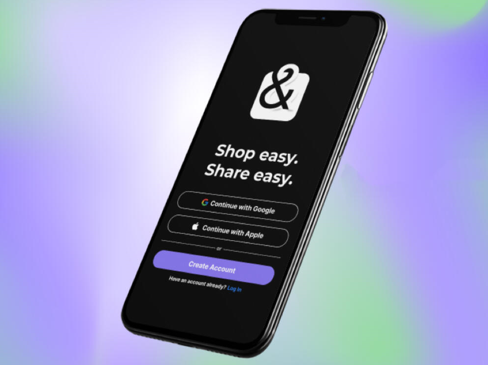
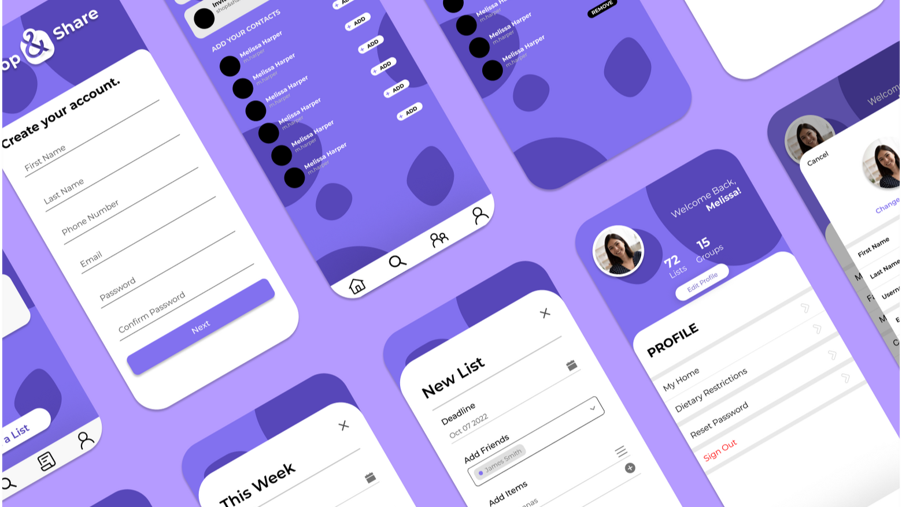
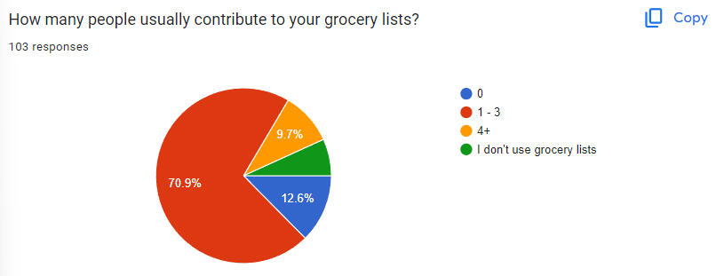
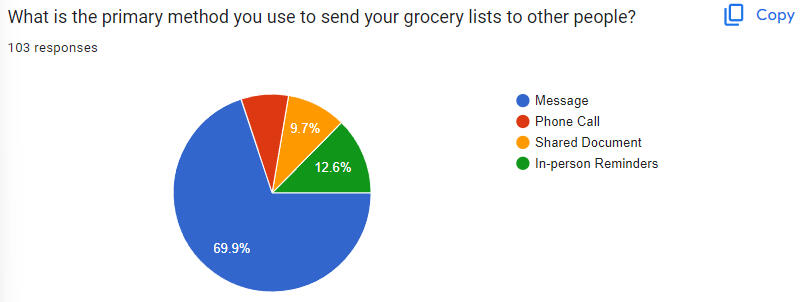
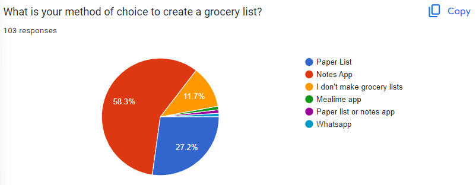
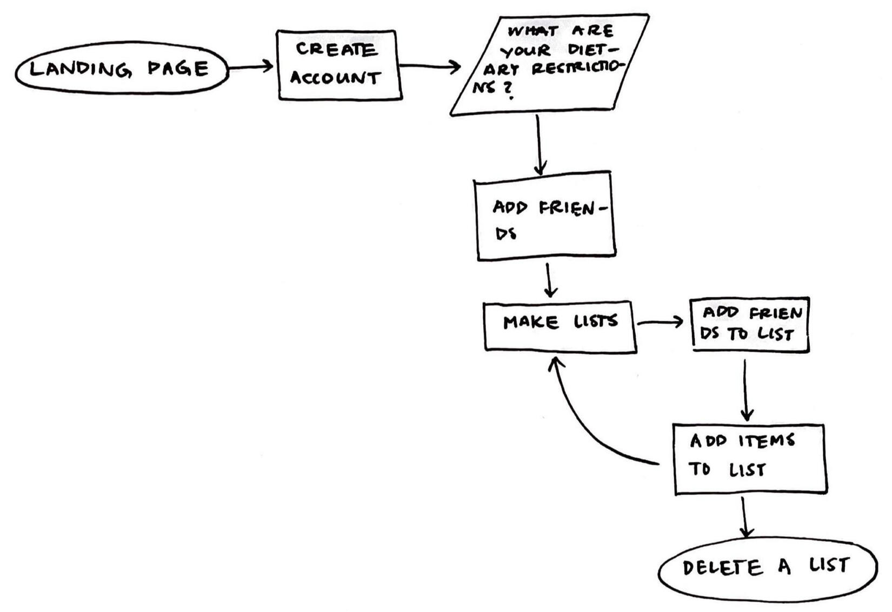
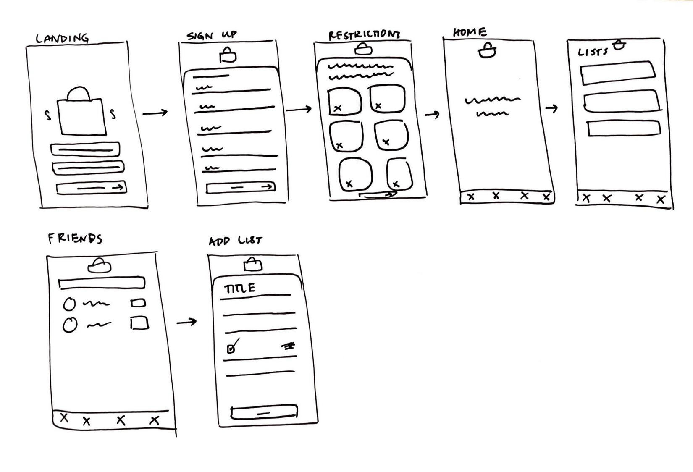
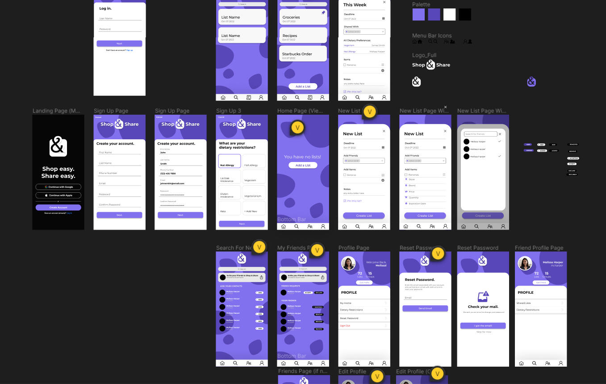

SHOP&SHARE APP DESIGN
Shop easy, share easy.
TIMELINE
Aug 2022 - Dec 2022
ROLE
UI/UX Designer, Front-end Developer
PLATFORM
Cross-platform Mobile App


⚪ Problem
It can get very difficult to manage grocery lists in households. University students typically dorm or room together, and many of these students lack a form of personal transportation. Because of this, they typically rely on one person to make their grocery runs. But wait - one roommate sent their list through the notes app, another through multiple, scattered texts, and another opts for photos. How do we fix this chaotic exchange of grocery lists so that users can have a smooth and enjoyable shopping experience?
⚪ Solution
Shop&Share is an app that allows a user to create and share grocery lists with others while keeping track of allergies and preferences of the people sharing the list while reminding you of items in your pantry nearing expiration.
⚪ Research
Pt. 1 - Assessing the issue
Although this problem is prevalent within my own circle of friends at university, what about everyone else? Our team wanted to compile a list of questions to send out in a survey for any college student to fill out...
Survey Questions
- On a scale of 1-5, how often do you have to use a shopping list when collecting groceries?
- What is your method of choice to create a grocery list?
- On a scale of 1-5, how frequently do you forget grocery items while shopping?
- For an online grocery list, would store, brand, quantity, and expiration date be useful fields when entering an item into a list?
- How many people usually contribute to your grocery lists?
- On a scale of 1-5, how often do you collect groceries for family or friends?
- On a scale of 1-5, how often do you forget a friend/family member’s allergies or dietary restrictions when going grocery shopping?
- What is the primary method you use to send your grocery lists to other people?
- On a scale of 1-5, how often do you share grocery lists with family/friends?
- On a scale of 1-5, how often do you find expired food in your refrigerator/pantry?
I decided that our target audience for this survey will be primarily college students along with adults that live in larger households and typically perform shopping errands. Additionally, because these two audience groups tend to be busy individuals, I wanted to make all of the questions multiple-select or based on the Likert-Scale.
Pt. 2 - Presenting the survey
How would we survey these people? Based on our app's target audience, I and my team members took to university class discords/groupme's and also asked our very own parents and older relatives to fill out the survey. In the end, we got 100+ responses to our survey, giving me plenty of insight needed to conceptualize and design our app.

Findings:
The overwhelming majority of the survey audience claim that they share their grocery lists with at least 1 person and at most 3 people. However, when asked their methods to create and send grocery lists, the majority use messages to send and the notes app to create it. This confirms that users are using multiple platforms to manage their grocery lists.



Pt. 3 - Competitive Analysis
I wanted to do further research on how unique this app will be compared to others. I researched similar mobile apps that streamlined grocery lists to compare their features to the features that my client (our project manager) wanted in the Shop&Share app.
Three potential competitors were found: OurGrocery, AnyList, and ListEasy. I downloaded and tested these apps to analyze which features they had. Here's how they compared to Shop&Share:
| Features | Shop&Share | OurGrocery | AnyList | ListEasy |
|---|---|---|---|---|
| Multi-User Sharing | ✓ | ✓ | ✓ | ✓ |
| Real-time Editing | ✓ | ✗ | ✓ | ✗ |
| Dietary Restrictions | ✓ | ✗ | ✗ | ✗ |
| Expiration Notifications | ✓ | ✗ | ✗ | ✗ |
There are many apps that allow for multi-user sharing for lists; however, none of them have the unique features that our client has asked for - a method to view a user's dietary restrictions and a notification system that notifies you when a product has expired. These features may be more beneficial for university students that are not aware of their roommates' dietary preferences or allergies, and it will help them keep track of rotten food in their pantry.
⚪ Design
Based on the general features of our app, I first created a simple sketch of a user flow for a a first-time user's happy path.

Wireframing
Using this flow, I drew up a rough wireframes. Again, these wireframes solely focus on the general happy path and onboarding process, ignoring edge cases.

Mockup
These wireframes were assessed by the rest of my team, and based on their feedback, I got to work making the mockups in Figma.

Throughout this process, I kept checking in with our client/project manager to ensure that all the features were what she imagined and desired. Additionally, I asked two people outside of our project to give feedback on the clarity of the flow and features.
One issue that these users encountered were how crowded the information was for making new lists. Before, item details such as brand and store were statically displayed. To fix this, I confined these details to a hamburger icon and made sure that this information was relayed to the rest of the team.
⚪ Implementation
Along with being a UI/UX designer for the app, I was also a front-end developer. Our app used React-Native, allowing for a cross-platform app. I got the opportunity to implement these pages myself! I was able to ensure that the actual implementation of the UX was consistent with the prototypes.
⚪ Working Demo
Below is a working demo that our team showed on presentation night!